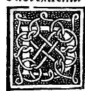

Chapter VIII: How a Quantity Divided According to the Proportion Having a Mean and Two Extremes Is Understood¶
How a Quantity Divided According to the Proportion Having a Mean and Two Extremes Is to Be Understood

We must know, once these things have been well noted, that to divide a quantity according to the proportion having a mean and two extremes means to make of it two unequal parts such that the product of the lesser part and the whole undivided quantity is equal to the square of the greater part, as our Philosopher declares in the third definition of the Sixth Book ([VI.def.3]):
$$(a + b) \cdot b = a^2$$
Therefore, even if a problem should never explicitly mention dividing a quantity “according to the proportion having a mean and two extremes,” but should merely ask to make of it two parts so conditioned that the product of one part and the whole quantity equals the square of the other part, anyone who understands well and is expert in the art must reduce the problem to this our proportion, since it cannot be interpreted otherwise.
Algebraic Division of $10$ in the Divine Proportion
For example, suppose someone should say: “Make of $10$ two such parts that when one part is multiplied by $10$, it produces as much as the other part multiplied by itself.”
Operating upon this case and others like it according to the rules given by us in the speculative practice called Algebra and Almucabala—known by another name as the Rule of the Thing (Regola dela Cosa)—set forth in our aforesaid work [Summa, Distinctio VIII], the problem is found to be solved thus:
One part, namely the lesser part, is $15 - \sqrt{125}$ (15 m. R. 125);
The other, namely the greater part, is $\sqrt{125} - 5$ (R. 125 m. 5).
These parts, thus written, are irrational, and in the art they are called apotomes (residui), of which our Philosopher assigns six species in the seventy-ninth [seventy-third] proposition of the Tenth Book ([X.73]).
In common speech, the said parts are pronounced thus: the lesser is “fifteen minus the square root of one hundred twenty-five,” which means: take the square root of $125$, which is a little more than $11$ [$\approx 11.18034$], and subtract it from $15$, leaving a little more than $3$, or let us say a little less than $4$ [$\approx 3.81966$]. And the greater part is pronounced “the square root of $125$ minus $5$,” which means: take the square root of $125$, which is a little more than $11$ as said, and subtract $5$ from it, leaving a little more than $6$, or let us say a little less than $7$ [$\approx 6.18034$], for the said greater part.
(As for such operations of multiplying, adding, subtracting, and dividing apotomes [residui], binomials [binomii], and roots [radici], as well as all other rational and irrational quantities, whole numbers and fractions, in every way—since we have demonstrated them in full in our aforesaid work [Summa], I do not trouble to repeat them here, attending only to stating new things and not reiterating those already told.)
Verification of Continuous Proportionality
When any quantity is thus divided, we shall always have three terms ordered in continuous proportionality:
The first is the whole divided quantity, that is, the greater extreme, as here in the proposed case $10$;
The second is the greater part, that is, the mean, namely $\sqrt{125} - 5$;
The third is the lesser part, that is, the lesser extreme, namely $15 - \sqrt{125}$.
Between these three terms there is one and the same ratio: namely, from the first to the second as from the second to the third ($10 : (\sqrt{125} - 5) = (\sqrt{125} - 5) : (15 - \sqrt{125})$), and conversely from the third to the second as from the second to the first.
And multiplying the lesser extreme ($15 - \sqrt{125}$) by the greater extreme ($10$) produces the exact same result as multiplying the mean ($\sqrt{125} - 5$) by itself: for both products equal
$$150 - \sqrt{12500}$$
just as our proportion requires!